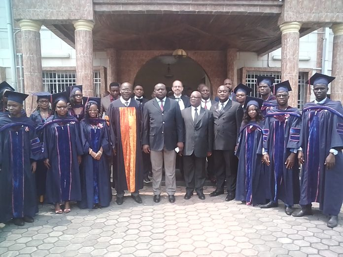

About Me
Ms Salomey Osei studied Mathematics at the Kwame Nkrumah University of Science and Technology (KNUST), with a focus on Applied Mathematics, and her thesis was on Normed Inducing Metrics. She graduated from African Institute for Mathematical Sciences (AIMS Cameroon) as part of the first cohort in the AIMS Coop Program in 2019 with her internship based in Douala with the Chambre de Commerce, de l’Industrie, des Mines et de L’Artisanat (CCIMA) where she worked on Geolocation. She also volunteered as a mathematics tutor for high school students in Cameroon as part of the MasterCard Foundations Scholars Program. Immediately after leaving AIMS she joined the Ghana National Council of Private Schools (GNACOPS) to train private teachers in the new curriculum provided by the Ghana Government and the Ministry of Education.
Currently, she has been awarded the Google and Facebook scholarship to study masters in Machine Intelligence in AIMS Ghana. She was selected as one the participants to take part in the Thirty-fourth Conference on Neural Information Processing Systems (NeurIPS), Vancouver, Canada and the Black In AI workshop organized by Black In AI in December 2019. The emphasis of this program was on practical skills in machine learning, big data and AI.
“ I aspire to be one of the few researchers in the area of Machine Learning applied to Finance”. I would love to extend this knowledge to others by lecturing in a University in my country.